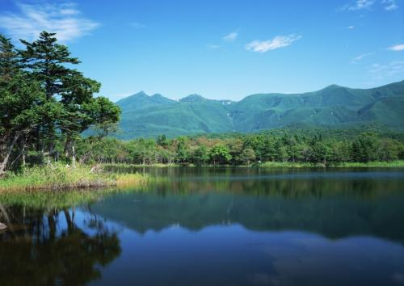

北海道（Hokkaido）位于日本最北部，濒临日本海、鄂霍次克海和太平洋，面积83,500平方公里，占日本国土的22％，人口约600万。夏天湿度较低，气候宜人，冬天能开展滑雪等各种冬季体育活动，春秋天也各有特点，作为观光地，北海道一年四季都受人欢迎。 北海道土地辽阔，自然优美，物产丰富。冬季冰封千里，可观赏冰雪节、流冰和滑雪，夏季原野鲜花盛开，气候凉爽，是日本避暑胜地。美食有札幌啤酒、拉面、毛蟹海鲜等。 这里有大雪山国立公园，它是北海道的屋脊，而知床半岛有着许多不为人知的秘境，钏路湿原生息着丹顶鹤等珍禽，支笏洞爷国立公园分布着众多火山和湖泊，积丹海岸曲折多变，去这些风景区游览，能让人感受到大自然的雄伟壮丽。除此以外，北海道还有登别、定山溪、层云峡等许多温泉区，游客在这里可以放松身心，洗去旅途的疲劳。
